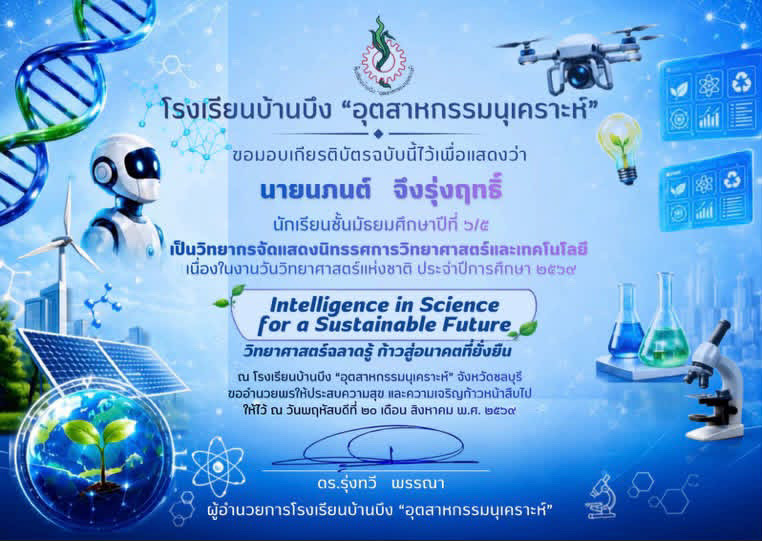

แฟ้มสะสมผลงาน (Portfolio) ฉบับนี้จัดทำขึ้นเพื่อรวบรวมประวัติส่วนตัว ประวัติการศึกษา ผลงาน โครงงาน และกิจกรรมที่ข้าพเจ้าได้เข้าร่วมตลอดช่วงที่ผ่านมา โดยมีจุดมุ่งหมายเพื่อแสดงให้เห็นถึงความรู้ ความสามารถ ทักษะ และประสบการณ์ที่ได้สั่งสมมา รวมถึงความสนใจและความตั้งใจในการศึกษาต่อระดับอุดมศึกษา
ข้าพเจ้ามีความสนใจในด้านเทคโนโลยีการเกษตรและมีความมุ่งมั่นที่จะพัฒนาตนเอง ให้มีความรู้ความสามารถในสาขานี้ แฟ้มสะสมผลงานเล่มนี้จึงเป็นส่วนหนึ่ง ในการนำเสนอความตั้งใจ ความรับผิดชอบ และความพยายามของข้าพเจ้า ในการเตรียมความพร้อมสู่การศึกษาต่อและการประกอบอาชีพในอนาคต
ชื่อ–นามสกุล: นภนต์ จึงรุ่งฤทธิ์
ชื่อภาษาอังกฤษ: NAPON Chuengrungrit
วันเดือนปีเกิด: 2 กรกฎาคม 2551
ชื่อเล่น: อ๊อฟ
อายุ: 18 ปี
แผนการเรียน: เตรียมวิศวกรรมศาสตร์
ความสนใจ: เทคโนโลยี การเกษตร
เป้าหมาย: ศึกษาต่อระดับมหาวิทยาลัย และพัฒนาตนเองด้านเทคโนโลยี การเกษตร
ช่องทางการติดต่อ
📞 เบอร์โทรศัพท์ : 0882707915
📧 Gmail : naponaop.11@gmail.com
มหาวิทยาลัยที่จะศึกษาต่อ: มหาวิทยาลัยบูรพา
คณะที่สนใจ: คณะเทคโนโลยีการเกษตร
หลักสูตร: วิทยาศาสตรบัณฑิต (วท.บ.)
สาขา: สาขาวิชาพัฒนาผลิตภัณฑ์อุตสาหกรรมเกษตร
เป้าหมายในชีวิต: เจ้าของธุรกิจการเกษตร
ข้าพเจ้ามีความตั้งใจที่จะศึกษาต่อด้านเทคโนโลยีการเกษตร เพื่อนำความรู้ไปพัฒนาผลิตภัณฑ์และต่อยอดเป็นธุรกิจการเกษตรในอนาคต

รายละเอียดผลงาน: เข้าร่วมเป็นวิทยากรจัดแสดงผลงานนิทรรศการวิทยาศาสตร์และเทคโนโลยี เนื่องในงานวันวิทยาศาสตร์แห่งชาติ
ทักษะที่ได้รับ
ขอบคุณทุกท่านที่เข้ามาเยี่ยมชม แฟ้มสะสมผลงานของผม
ผมจะมุ่งมั่นพัฒนาความรู้ ความสามารถ และทักษะของตนเองต่อไป
Thank you for visiting my portfolio ✨
🏠 กลับหน้าหลัก